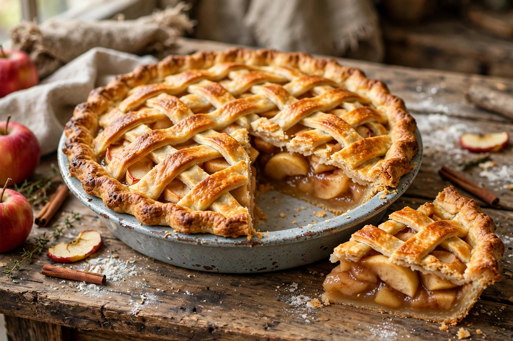

A pie is a baked dish which is usually made of a pastry dough casing that contains a filling of various sweet or savoury ingredients. Sweet pies may be filled with fruit (as in an apple pie), nuts (pecan pie), sweetened vegetables (pumpkin pie), or with thicker fillings based on eggs and dairy (custard pie). Savoury pies may be filled with meat (steak pie), eggs and cheese (quiche), or a mixture of meat and vegetables (pot pie).
Pies are defined by their crusts. A filled pie has pastry lining the baking dish and a filling; an open-top or single-crust pie has pastry only on the bottom. A top-crust pie has filling in the bottom of the dish and is covered with a pastry top before baking. A double-crust pie has a complete pastry casing. Shortcrust pastry is a common type used for pie crusts, but many variations can be used, including puff pastry and filo pastry.
The pie is an ancient food. Early pies appeared in ancient Egypt, and the ancient Greeks and Romans made pies with reed-like pastry shells that served mainly as containers for meat fillings rather than as food themselves. In medieval England, pies — called "coffyns" for their box-like crusts — were a staple way of preserving and transporting meat. Fruit pies became common in the 16th century; a recipe for apple pie appears in English cookery books by the late 1500s. English settlers brought pies to America, where the apple pie became a cultural symbol, hence the phrase "as American as apple pie." In 19th-century America, pie was eaten at breakfast as well as dessert.
Pies feature in nursery rhymes such as "Sing a Song of Sixpence," in which four and twenty blackbirds are baked in a pie, and in the expression "pie in the sky" for an unrealistic hope. Pie-throwing became a staple of slapstick comedy in silent films. Eating contests featuring pie are common at American county fairs.